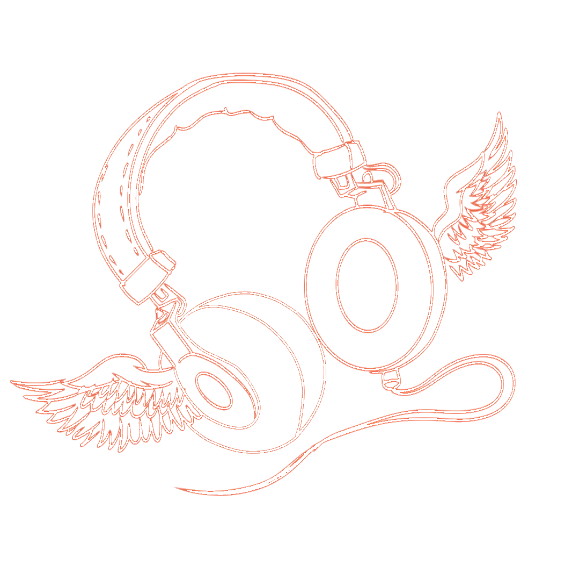

Punisher
Phoebe Bridgers
2020
Indie / Folk Rock

Indie / Grunge / Dream Pop
I'm a DS219 student learning to build with a coding agent. This page collects the artists and albums I keep coming back to.
Phoebe Bridgers
2020
Indie / Folk Rock

Hole
1994
Grunge / Punk

Lana Del Rey
2014
Dream Pop / Baroque Pop
Filter by genre to find your next obsession. Use Tab to reach the buttons and Enter or Space to select one.
No recommendations for this genre yet.